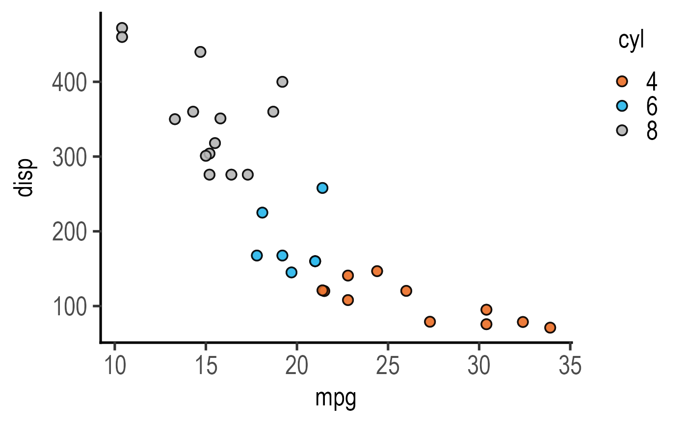
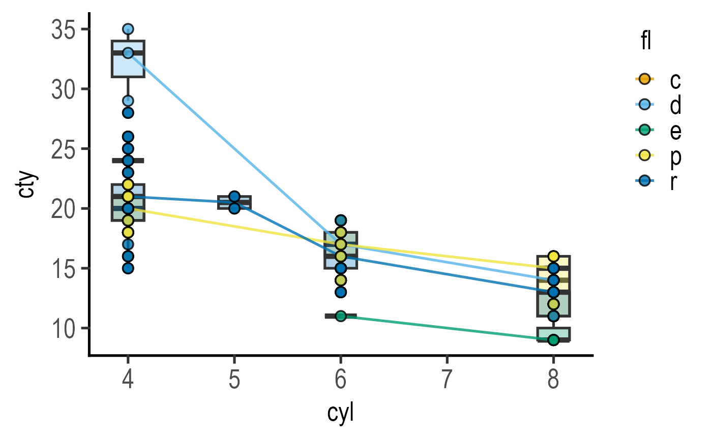

R/plot_xy_CatGroup.R
plot_xy_CatGroup.RdThis function takes a data table, quantitative X and Y variables along with a categorical grouping variable, and a and plots a graph with using geom_point. The categorical CatGroup variable is mapped to the fill aesthetic of symbols.
plot_xy_CatGroup(
data,
xcol,
ycol,
CatGroup,
facet,
Boxplot = FALSE,
Mean = FALSE,
ErrorType = "SD",
symsize = 3,
s_alpha = 0.8,
TextXAngle = 0,
LogYTrans,
LogXTrans,
LogYBreaks = waiver(),
LogXBreaks = waiver(),
LogYLabels = waiver(),
LogXLabels = waiver(),
LogYLimits = NULL,
LogXLimits = NULL,
facet_scales = "fixed",
fontsize = 20,
bwid = 0.3,
b_alpha = 0.3,
l_alpha = 0.8,
e_alpha = 0.8,
all_size = 2,
all_alpha = 0.5,
symthick,
bthick,
ethick,
ewid = 0.2,
ColPal = c("okabe_ito", "all_grafify", "bright", "contrast", "dark", "fishy", "kelly",
"light", "muted", "pale", "r4", "safe", "vibrant"),
ColSeq = TRUE,
ColRev = FALSE,
...
)a data table object, e.g. data.frame or tibble.
name of the column (without quotes) with quantitative X variable.
name of the column (without quotes) with quantitative Y variable.
a categorical variable as grouping factor for colour of data points, should be a categorical variable for default colours to work. Will be converted to factor if your column is numeric
add another variable (without quotes) from the data table to create faceted graphs using facet_wrap.
logical TRUE/FALSE to plot box and whiskers plot (default = FALSE).
logical TRUE/FALSE to plot mean and SD/SEM/CI95 error bars (default = FALSE).
select the type of error bars to display. Default is "SD" (standard deviation). Other options are "SEM" (standard error of the mean) and "CI95" (95% confidence interval based on t distributions).
size of symbols used by geom_point. Default set to 3.
fractional opacity of symbols, default set to to 0.8 (i.e, 80% opacity).
orientation of text on X-axis; default 0 degrees. Change to 45 or 90 to remove overlapping text.
transform Y axis into "log10" or "log2" (in quotes).
transform X axis into "log10" or "log2"
argument for ggplot2[scale_y_continuous] for Y axis breaks on log scales, default is waiver(), or provide a vector of desired breaks.
argument for ggplot2[scale_x_continuous] for Y axis breaks on log scales, default is waiver(), or provide a vector of desired breaks.
argument for ggplot2[scale_y_continuous] for Y axis labels on log scales, default is waiver(), or provide a vector of desired labels.
argument for ggplot2[scale_x_continuous] for Y axis labels on log scales, default is waiver(), or provide a vector of desired labels.
a vector of length two specifying the range (minimum and maximum) of the Y axis.
a vector of length two specifying the range (minimum and maximum) of the X axis.
whether or not to fix scales on X & Y axes for all graphs. Can be fixed (default), free, free_y or free_x (for Y and X axis one at a time, respectively).
parameter of base_size of fonts in theme_classic, default set to size 20.
width of boxplot (default = 0.3).
fractional opacity of boxes, (default = 0.3).
fractional opacity of lines joining boxes, (default = 0.8).
fractional opacity of error bars, (default = 0.8).
size of symbols of all data points, if shown (default = 2.5).
fractional opacity of all data points (default = 0.3). Set to non-zero value if you would like all data points plotted in addition to the mean.
size (in 'pt' units) of outline of symbol lines (stroke), default = fontsize/22.
size (in 'pt' units) of outline of boxes, whisker and joining lines (stroke), default = fontsize/22.
thickness of error bar lines; default fontsize/22.
width of error bars, default set to 0.2.
grafify colour palette to apply (in quotes), default "okabe_ito"; see graf_palettes for available palettes.
logical TRUE or FALSE. Default TRUE for sequential colours from chosen palette. Set to FALSE for distant colours, which will be applied using scale_fill_grafify2.
whether to reverse order of colour within the selected palette, default F (FALSE); can be set to T (TRUE).
any additional arguments to pass on.
This function returns a ggplot2 object of class "gg" and "ggplot".
A box and whisker plot with lines joining the medians can be plotted with Boxplot = TRUE. If only box plot is needed without the line, set the opacity of the line to 0 (i.e., l_alpha = 0).
Colours can be changed using ColPal, ColRev or ColSeq arguments. Colours available can be seen quickly with plot_grafify_palette.
ColPal can be one of the following: "okabe_ito", "dark", "light", "bright", "pale", "vibrant, "muted" or "contrast".
ColRev (logical TRUE/FALSE) decides whether colours are chosen from first-to-last or last-to-first from within the chosen palette.
ColSeq (logical TRUE/FALSE) decides whether colours are picked by respecting the order in the palette or the most distant ones using colorRampPalette.
This plot is related to plot_xy_NumGroup which requires a numeric grouping factor.
When summary statistics (mean/median) are required, use plot_3d_scatterbar, plot_3d_scatterbox or plot_4d_scatterbox.
#The grouping factor cyl is automatically converted to categorical variable
plot_xy_CatGroup(data = mtcars,
xcol = mpg, ycol = disp, CatGroup = cyl,
ColPal = "vibrant", ColSeq = FALSE)

#with boxplot
plot_xy_CatGroup(data = mpg,
xcol = cyl, ycol = cty,
CatGroup = fl, Boxplot = TRUE)

#add another variable
#with boxplot
plot_xy_CatGroup(data = mpg,
xcol = cyl, ycol = cty,
CatGroup = fl, facet = drv,
Boxplot = TRUE)